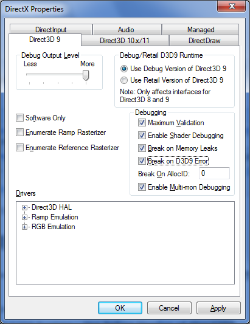
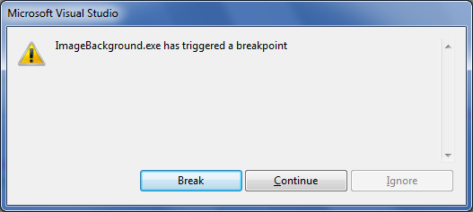
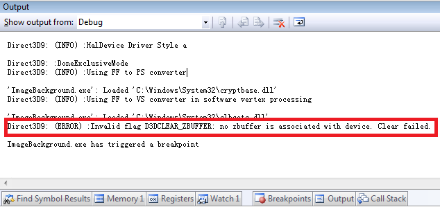
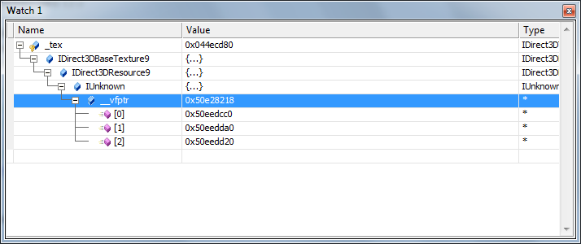
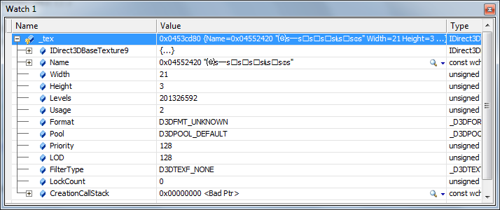
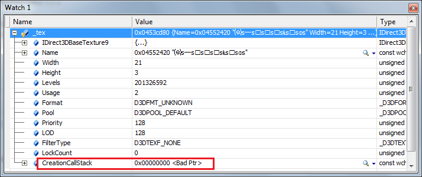
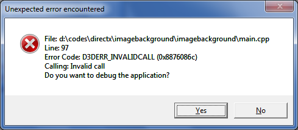
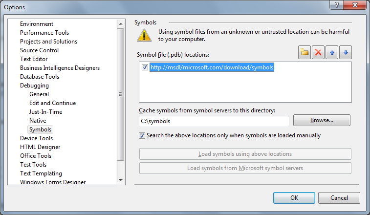

如何调试DX程序
配置调试环境
如果安装了DirectX SDK，就可以通过SDK中的DirectX Control Panel来设置调试选项，这个工具位于开始-程序-Microsoft DirectX SDK(June 2010)-DirectX Utilities中，也可以在SDK的安装目录下找到，在我这里是C:\Program Files\Microsoft DirectX SDK (June 2010)\Utilities\bin\x86。运行后如下图。

由于我机器上安装的是DX9，所以我们只看有关DX9的设置
Debug Output Level – 这是调试输出的级别，级别越高，输出的调试信息越丰富，选择More
Debug/Retail D3D9 Runtime – 这是选择调试所用的库类型，我们选择Use Debug Version of Direct3D9
Debugging – Select all
- Maximum Validation, 最大验证模式
- Enable Shader Debugging, 启用Shader调试
- Break on Memory Leaks, 内存泄露时中断，这是最有用的选项，因为最常见的错误就是内存泄露
- Break on D3D9 Error, 在D3D函数调用错误时中断
- Enable Multi-mon Debugging, 启用多显示器调试
注意：Software Only这个选项不要选，否则的话在创建D3D Device的时候就不能使用硬件设备了（D3DDEVTYPE_HAL）。
说一下Break on D3D9 Error选项，如果某个D3D函数调用出现错误，那么程序会立即断下，你将会看到如下模样的对话框。

单击Break按钮中断程序，然后打开Output窗口，会看到如下信息，这种信息只有在使用Debug版本的SDK时才会有，所以在开发的时候我 们尽量使用Debug版本，在发布的时候在转换为Release版本。下面的信息详细描述了错误的原因，在Clear函数中设置了清除z-buffer的 选项，但实际上我们根本没有创建z-buffer，所以清除失败了。Output窗口里面的信息是最全面，最直观的。应该尽可能参考此处的信息。

更丰富的调试信息
使用 #define D3D_DEBUG_INFO 宏可以产生更加丰富的调试信息，需要注意的是，这个宏必须出现在D3D9.h文件之前，DXUT程序都自动启用了这个宏。在未启用这个宏的时候，我们的到的信息常常是下面这样的

而在启用了这个宏之后，一个对象的所有属性都可以在调试的时候查看了

将\\HKEY_LOCAL_MACHINE\\SOFTWARE\\Microsoft\\Direct3D\\ D3D9Debugging\\EnableCreationStack设置为1，还可以查看对象创建过程中的调用栈，这样做会导致程序的速度很慢，但是 有助于发现资源泄漏。设置了这个值以后，在Watch窗口中会多出来一个变量CreationCallStack，里面记录的调用栈的内容，如下图。

使用DX提供的函数
DxErr.h 文件中提供了几个函数，可以用来输出Error或者Trace信息，这几个函数如下，需要注意的是，有几个函数只有在Debug模式下才可用

hr = g_pd3dDevice->Clear(0,
NULL, D3DCLEAR_TARGET | D3DCLEAR_ZBUFFER,
D3DCOLOR_XRGB(0,0,0),
1.0f,
0);
if (FAILED(hr))
{
DXTRACE_ERR_MSGBOX(DXGetErrorDescription(hr), hr) ;
DXTRACE_ERR_MSGBOX(DXGetErrorString(hr), hr) ;
DXTRACE_ERR_MSGBOX(L"Clear failed!", hr) ; // Use customized error string
DXTRACE_MSG(DXGetErrorDescription(hr)) ;
DXTRACE_ERR(DXGetErrorDescription(hr), hr) ;
}
DXTRACE_ERR_MSGBOX会输出如下形式的错误框，信息非常丰富，包含错误所在的文件，错误所在的行，错误码及其描述，对于定位及解决问题非常有帮助。

需要注意的是如果在DX Control Panel中的Debugging选项中开启了Break on D3D9 Error，那么这个对话框有时候将不会被显示，因为程序优先选择显示了程序中断对话框。DXTRACE_ERR和DXTRACE_MSG作用相同，都是 向Output窗口输出错误信息，而不显示错误框。
全屏程序的调试
全屏程序调试有两种方法
1 转换为窗口模式进行调试
2 使用双屏，要记得在DX的Control Panel里面将双屏调试选项开启
符号调试（symbol debugging）
符号文件可以从微软的符号文件服务器上下载，也可以在安装DX SDK的时候选择安装。连接符号服务器的方法有两种，一种是从Visual Studio的选项中设置，一种是用系统环境变量设置，这里推荐使用后者，因为后者是针对整个系统的设置，系统中其他的调试器也可以使用这个设置，比如 WinDbg，而前者则只是针对VS的设置。
使用Visual Studio的选项设置
Tools-Option-Debugging-Symbols，在Symbol file Locations中添加symbol server的地址，在本地缓存上添上c:\symbols，符号附件会下载到该文件夹。配置完以后，第一次调试的时候VS会变得很慢，这是因为需要下载 符号文件，等下载完成以后，再启动速度就会恢复正常了。

使用系统环境变量
使用该方法可以添加多个symbol server，添加一个名为_NT_SYMBOL_PATH的系统环境变量，该变量的值遵循如下语法格式：
srv*[local cache]*[private symbol server]*http://msdl.microsoft.com/download/symbols
一个常用的写法如下
srv*c:\symbols*http://msdl.microsoft.com/download/symbols，这样符号文件会下载到c:\symbols文件夹下。
=THE END=
Happy coding!!!


评论
#1楼
#2楼 [楼主]
多谢关注！
#3楼
#4楼 [楼主]
多谢指正，因为图片是在不同系统上截取的，有机会改过来。
#5楼
#6楼 [楼主]
现在已经统一成Win7风格的图片.
#7楼
#8楼 [楼主]
区区小文，能给您带来帮助是我莫大的荣幸。欢迎多多交流！
#9楼
#10楼 [楼主]
写这篇博客的时候用的好像是VS2010，兄弟，遇到了什么问题？
#11楼
#12楼 [楼主]
这种情况我也遇到过，我当时找到的原因是，有些变量没有初始化值，可能Release版本做了某些优化，所以导致结果不对。
#13楼
谢谢，问题已解决。SetViewport用的D3DVIEWPORT9的Width用的是窗口矩形的left，窗口下D3DPRESENT_PARAMETERS填充BackBufferwidth、BackBufferheight、BackBufferformat用的是填全屏模式的D3DDisplayMode。
#14楼 [楼主]
这断句。。。看起来好吃力。你说的这个原因和使用Debug或者Release version有关系么？
#15楼
我说的是我找到两个bug。。。有关系，刚刚又把D3DVIEWPORT9的Width改成窗口矩形的left（就是原来错了的），用Retail显示只有一个不动的物体（就像只渲染了一帧然后就一直显示这一帧），用debug就能正常显示（物体在动）。
#16楼 [楼主]
你是说，将D3DVIEWPORT9的Width设置为窗口的left时，debug和release版本的行为不同？
那么你又是如何修改的代码，使两者的行为相同呢？
#17楼
恩，D3DVIEWPORT9的Width用窗口的right就好了，教材上就用的rect.right，我输代码的时候输错了。
#18楼 [楼主]
明白了。